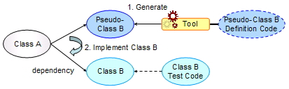
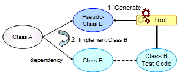

Pseudo-Classes and SCT
When developing classes that has dependency with unimplemented classes or the environment, it is common to use "Pseudo-Classes". "Pseudo-Classes" are "classes that behave in the same way as the real class, but the implementation is not correct" (also known as mocks, stubs, or drivers). With the use of pseudo-classes, development and testing of such classes is performed.
Though the use of pseudo-classes is effective, it is difficult to develop the pseudo-class itself, and it takes work. To deal with this problem, many pseudo-class generation tools are provided, but the tools themselves have the following problems.
- It is difficult to define the pseudo-class (Use of the tool's own unique API)
- At the end, the definition code for the pseudo-class is thrown away

For example, as seen in the diagram above, when class A has dependency with
class B, and class B is unimplemented at the time of implementation or testing
of class A, it is common to apply pseudo-classes.
The use of pseudo-class generation tools to reduce workload of
creating such classes can be presumued. But conventionally,
there is a need to use the original API provided by the tool
to define the pseudo-class.
In addition, the definition code for the pseudo-class
is not used for other than to generating the class, so the definition code
is thrown away after the simulation-class has been replaced with the real one.
Therefore, excess cost is payed to create pseudo-classes.
SCT is a concept where the test code for a class is interpreted as
the defintion of I/O for the class itself, and pseudo-classes are
generated from such definition codes, namely the test codes.
Information of external behavior of a class is include in test codes. SCT
uses this information and generates pseudo-classes.
As shown in the diagram below, since SCT apprehends the test code as the definition code for the pseudo-class, there is no need for learning the tool's own unique API. Also, when the pseudo-class is replace with the real class, the definition code itself is the code for testing, and is not thrown away. Therefore, the test code is effectively used.

KikainekoMocker reads JUnit test codes and generates pseudo-classes,
under the concept of SCT. By using the commonly used xUnit testing
framework, creating test codes are relatively simple, and it is posible
to intuitively define pseudo-classes.
With JUnit, which is highly recognized, as the definition code, cost of
studying the definition code for the pseudo-class can be reduced.
KikainekoMocker is a tool that implements the concept of SCT. By
analyzing JUnit test codes, pseudo-classes that pass the test
code are generated.